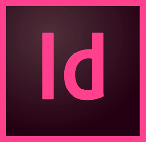
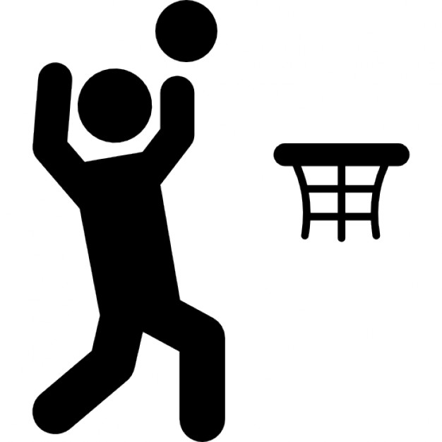
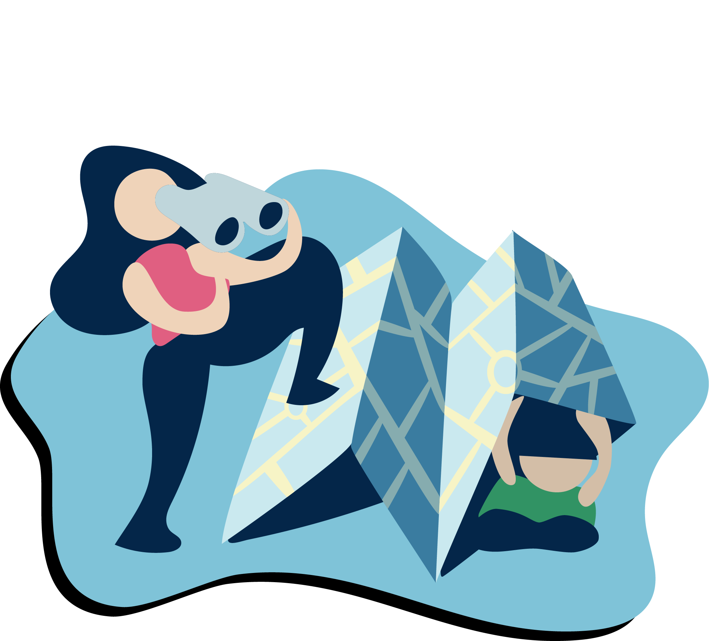
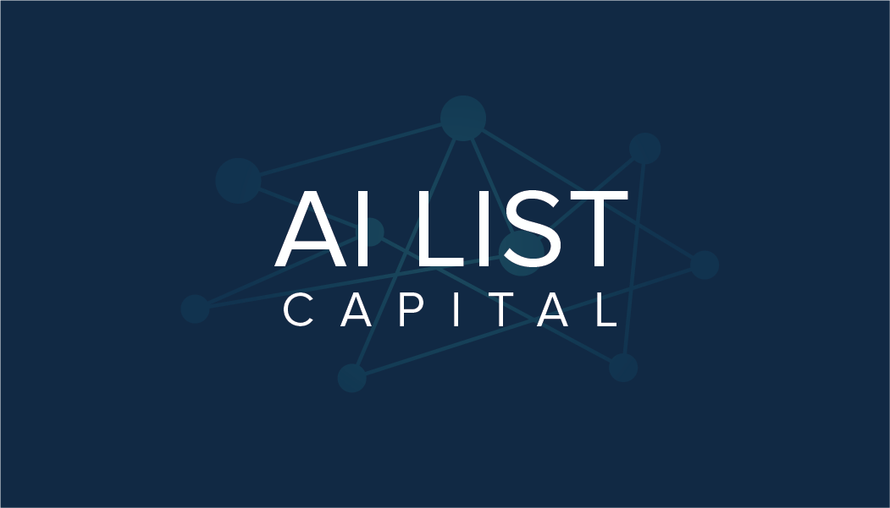
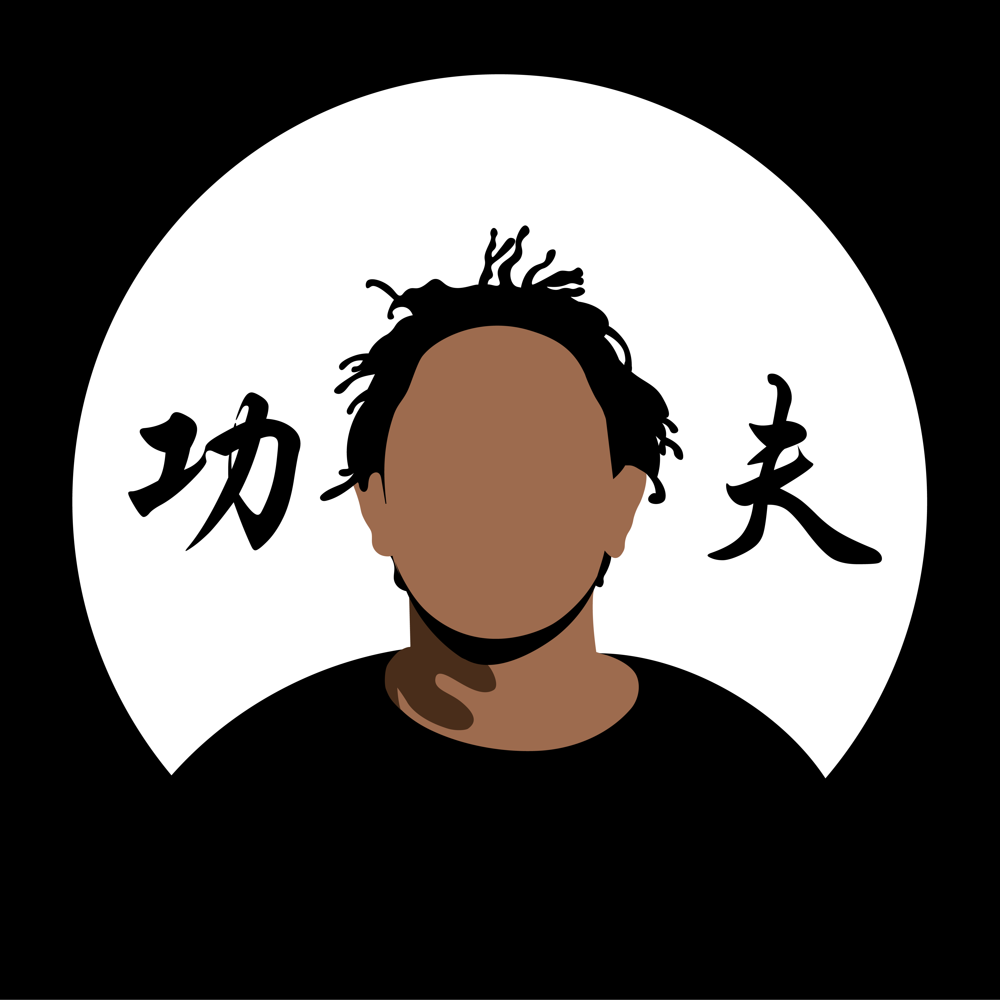
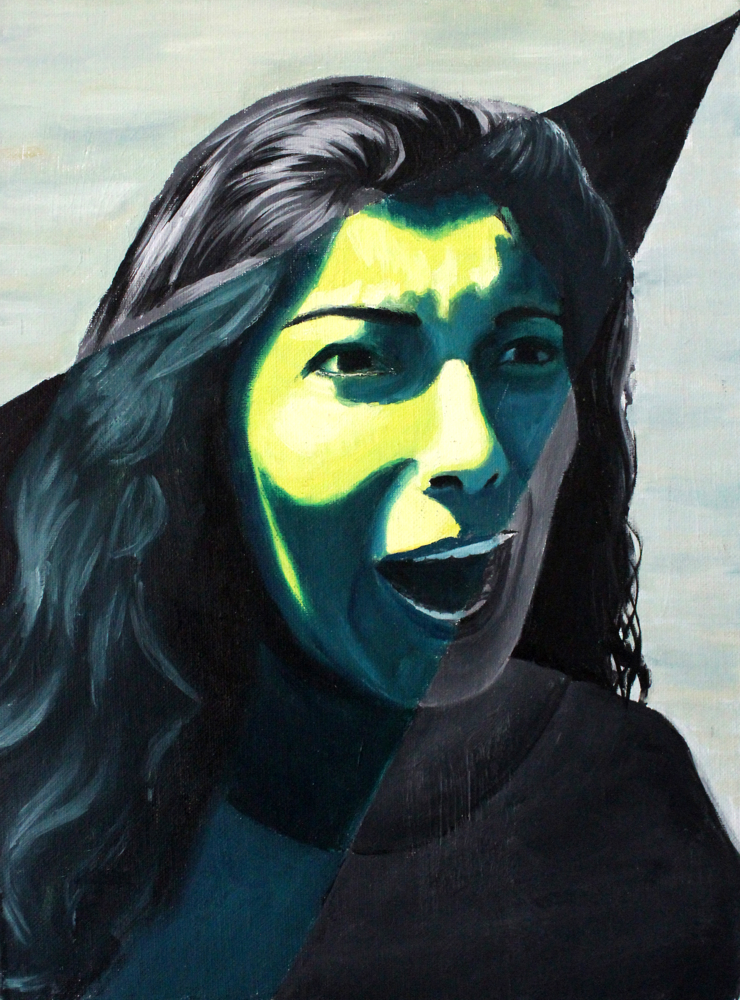
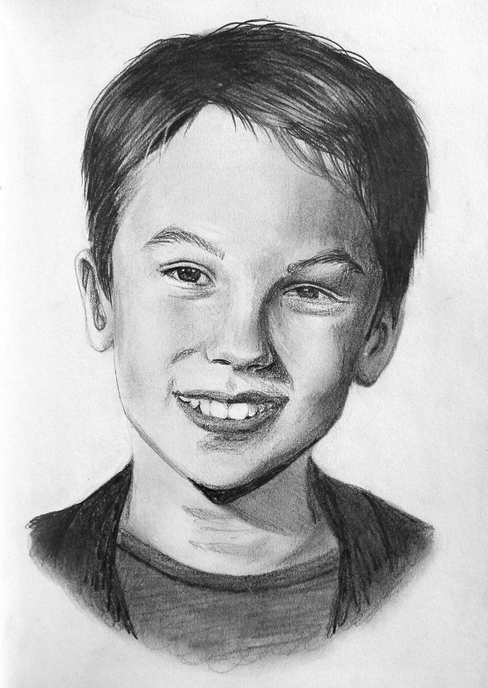
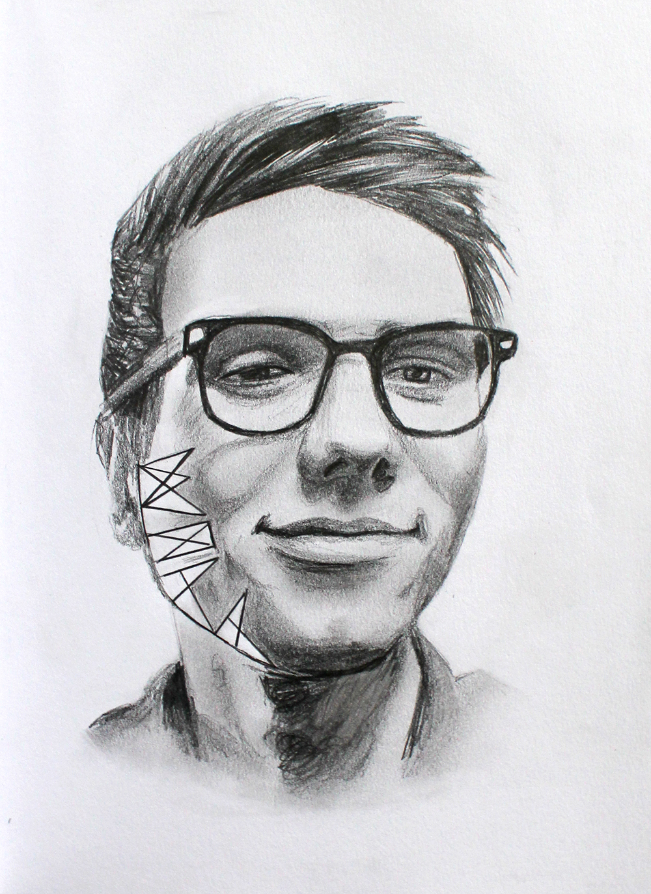
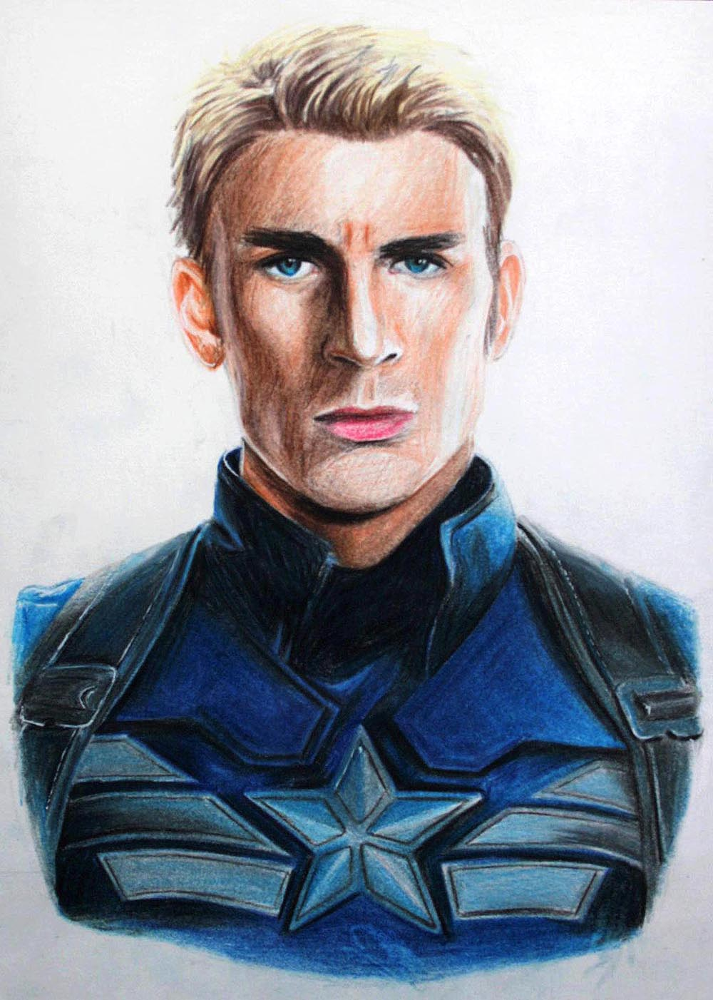

WEB PROJECTS
EXPERIENCES
Flatiron
Software Engineering Intern, June-August 2020
Technical tools (research, analytics, and EMR platform) supporting community oncology clinics.
- Scaled out a new service that centralized Medicare allowable info for practices, automating the coverage of up to 34% (~$1 billion) of charges network-wide in a previously entirely manual upload process.
- Built out primary functionality across Flatiron’s services that allowed practices to apply a single percentage to their entire allowable schedule, which could simplify allowable tracking for up to 90% of charges.
Tools used:
Intuit
Software Engineering Intern, June-August 2019
Financial tools (TurboTax, QuickBooks, Mint) to empower individuals and small businesses.
- Reduced external API calls on the internal metrics dashboard 4x by converting single writes into bulk uploads.
- Packaged their open source Standardly module for npm by refactoring code to remove unnecessary Python dependencies, adding code coverage and relevant checks, and cleaning documentation.
- Wrote webhook connecting consumer data access/delete requests to tables tracking manual status updates.
Alameda Point Collaborative
Graphic Designer, December 2018-June 2019
Alameda's Largest Housing Collaborative + Support Center.
- Designed their infographic visualize the $150k+ in volunteer impact received.
- Designed their 20 years anniversary logo, currently used on the website right now.
- Designed a logo for one of APC's sponsors, Felts Family Foundation.
Atrium
Growth Intern, June-August 2018
Tech-enabled corporate law firm for high-growth companies.
- Optimized lead generation and outbound prospecting processes in Salesforce/Apollo for 20+ email campaigns.
- Funneled leads into the sales pipeline with 100+ RSVPs per founder event and 50+ QMLs for the Contracts team.
- Drove product marketing initiatives by designing sales enablement assets for the business units on the legal side.
ObEN
NLP Intern, June-August 2017
Personalized Artificial Intelligence (PAI) authenticated on the Project PAI blockchain.
- Expanded + streamlined celebrity and universal chatbot question databases for the NLP team.
- Researched possibilities with ICOs for potential celebrity token ecosystems for future revenue development.
Data Application Lab
DS Intern, June-August 2017
Data science consulting firm and project-oriented educational platform.
- Executed queries that uploaded publicly available datasets onto DAL's educational database for their students.
- Cleaned + wrote documentation for datasets before their upload to the database.
- Generated chapter in DAL's data science textbook for students centering the application domain of data science.
PROJECTS
Dingo
co-founder, September 2017-January 2019
Mobile app that automates notifying friends when one gets home.
- Spearheaded product design process with user/market research, wireframing, and prototyping.
- Developed front-end for app translated from product design.
- Developed a more stable version for iOS through Swift.
CAMPUS ACTIVITIES
Sigma Eta Pi
Entrepreneurship society focused on giving new members the resources to develop and launch their own ventures in one semester.
Design co-chair, June 2019-Present
- Overhauled the website.
- Helped design marketing materials (flyers, posters, banners).
President, January-June 2019
- Oversaw operations, professional development, internal relations, and external events.
- Began our relationship with The House.
- Executed the start of an accountability program for active members working on ventures/assorted projects.
- Kickstarted SEP's Medium blog, showcasing active projects and interests.
- Spearheaded the reorganization of our internal resources--for professional development, academic help, and internal organization. Held executive team accountable for developing an in-depth description of the initiatives tried as well as resources for the transitioning executive member to use.
Operations VP, August-December 2018
- Managed the club's $10k+ budget for internal professional development as well as external events.
- Piloted an internal seed fund for members to use for their projects.
- Oversaw financial logistics for DONUTcon, a conference featuring 20 speakers from a variety of positions in startups and VCs in the Bay Area. This conference was a collaboration between SEP and the National University of Singapore Entrepreneur’s Association.
Net Impact
UC Berkeley's consulting group focused on social impact and sustainable business.
Associate consultant, January 2018-January 2019
- Led extensive data analysis on 500k user survey responses for the director of an online educational platform focused on social entrepreneurship seeking to segment and broaden their customer base.
- Worked with a sustainable outdoor clothing and gear company to develop a strategic shared economy model for their outdoor equipment through competitive analysis, risk assessment, and cost structure breakdowns.
SKILLS
Programming languages:
Tools:

Interests:



WEB
PRODUCT
dingo
GRAPHIC DESIGN



TRADITIONAL ART








